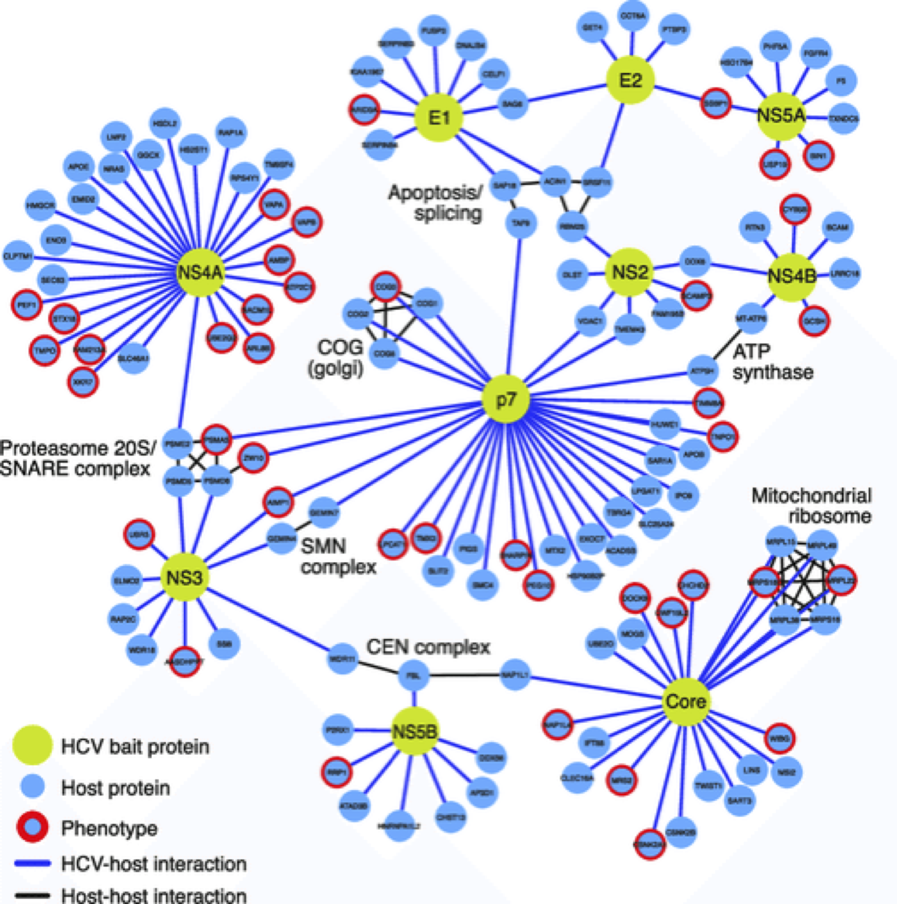
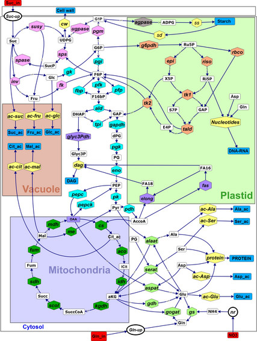
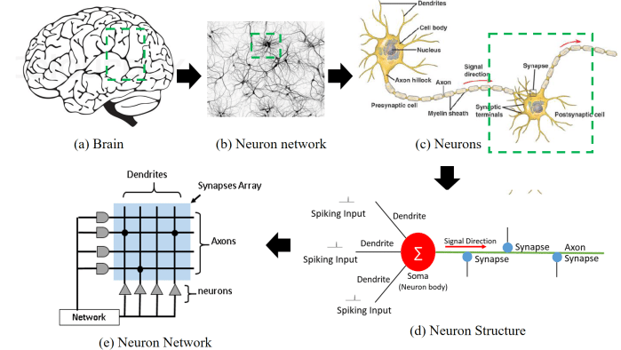

Introduction: Networks Rule Biology
by Noah Lee and Phillip Compeau
In the prologue, we worked with a particle-based model that simulated the interactions of skin cells to produce complex Turing patterns. In this module, we will zoom into a much lower biological scale and model protein interactions, which occur on a molecular level. The scale of these interactions is tiny: a protein is typically on the order of about 10nm in diameter. (For comparison, a light microscope’s highest resolution is about 2000 nm, and the diameter of a single human hair is about 100,000 nm.)
In this module, we turn our attention to the question of how a cell can adjust its protein concentrations in reaction to an ever-changing environment. We will see that the mechanisms the cell uses to make these changes are rapid, robust, and elegant.
We will also introduce the concept of a network, or a collection of nodes along with edges that connect pairs of nodes. Before continuing, we will take the opportunity to give a few examples of biological networks.
When studying the functions and binding of proteins, biologists may build a protein-protein interaction network (figure below). Nodes correspond to proteins, and two proteins are connected with an edge if they are known to interact.
 A complete hepatitis C virus-host protein-protein interaction network in hepatoma cells.1 Nodes correspond to proteins, and an edge connects two proteins if the two proteins interact.
When studying the more complex interactions and processes taking place within a cell, biologists form a metabolic network (figure below). Nodes correspond to substances in a chemical reaction, and an edge connects two nodes if there is some enzyme that catalyzes a reaction involving these substances.
 The metabolic network of tomato cells.2
When studying the nervous system, biologists build neuronal networks that link neurons together according to how they are linked in the body (figure below). These networks have been studied since the 1940s but have recently exploded as a model for solving applied problems in machine learning.
 Mapping and models of neurons.3
In this module, we will introduce yet another fundamental biological network called a transcription factor network that involves the proteins that drive a cell’s response to its environment. We will hunt for network motifs, or commonly occurring structures, hidden in this network. We will then use modeling to address the more challenging question of why these motifs have evolved in order to help the cell respond to its environment.
But before we get ahead of ourselves, let us introduce some of the molecular biology fundamentals we will need to complete our analysis. As in the prologue, you may already know this biological background, in which case you should feel free to skim the next lesson.
-
Ramage, Holly & Kumar, Gagandeep & Verschueren, Erik & Johnson, Jeffrey & Dollen, John & Johnson, Tasha & Newton, Billy & Shah, Priya & Horner, Julie & Krogan, Nevan & Ott, Melanie. (2015). A Combined Proteomics/Genomics Approach Links Hepatitis C Virus Infection with Nonsense-Mediated mRNA Decay. Molecular cell. 57. 329-340. 10.1016/j.molcel.2014.12.028 ↩
-
Colombie, Sophie & Nazaret, Christine & Bénard, Camille & Biais, Benoit & Mengin, Virginie & Solé, Marion & Fouillen, Laetitia & Dieuaide‐Noubhani, Martine & Mazat, Jean-Pierre & Beauvoit, Bertrand & Gibon, Yves. (2014). Modelling central metabolic fluxes by constraint-based optimization reveals metabolic reprogramming of developing Solanum lycopersicum (tomato) fruit. The Plant Journal. 81. 10.1111/tpj.12685. ↩
-
An, Hongyu. (2017). Opportunities and challenges on nanoscale 3D neuromorphic computing system. 10.1109/ISEMC.2017.8077906. ↩